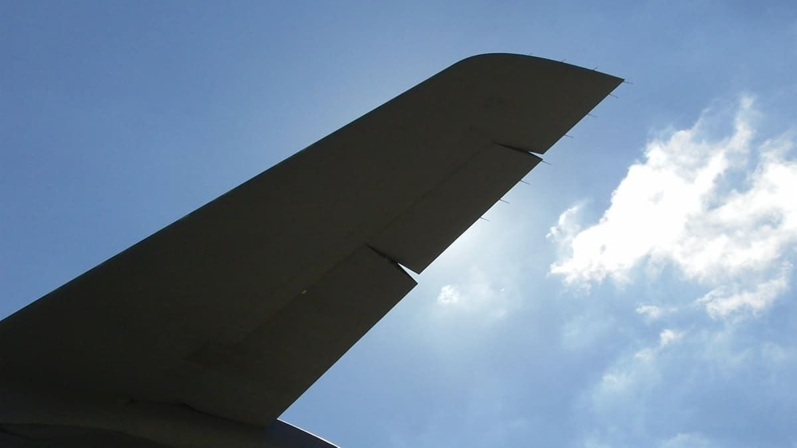

So it turns out that wind tunnels cost significantly more than fifty cents per hour, which means that it exceeds this project's budget. But fear not; knowledge of a wing, its shape, and its function will be covered here, and it most certainly fits the budget.
The purpose of wings is to create lift, which is the aircraft's upward force, taking its journey beyond just a road trip. If lift exceeds weight (the product of mass and gravitational acceleration), the aircraft will accelerate upwards. It is modeled by this equation:
L = Cl * A * .5 * r * V^2
Wings create lift by creating a pressure difference between the top and bottom.[source] Here is a diagram of the airflow around a wing:
Another force created by the wing is drag, which resists motion. It is caused by the movement of any object through a fluid. There are three types of drag, which are skin friction drag, form drag, and wave drag.
Skin friction drag is the friction between the object's surface and the fluid around it.
Form drag is the drag arising from the object's shape.
Wave drag is caused by shock waves, which are formed as part of an object travels at supersonic speeds.
Drag is modeled by this equation:
D=Cd*(ρV^2)/2*A [source]
Here is a free-body diagram of a wing during takeoff:
Lift and thrust exceed weight and drag respectively, so the aircraft accelerates upwards and forward
During takeoff and landing extra lift is needed at comparatively lower speeds from the cruise section. This could be done simply by increasing the wing's surface area, which will increase lift as shown in its equation above. But increasing area will also increase drag as shown in the drag equation above. There is thus a need for a retractable method to increase the wing's surface area when more lift is needed, whence flaps are thence used. Here is a departing 747 with its flaps deployed:
It can be seen that these flaps both increase the wings' surface areas and help deflect air downwards. Here is a diagram of the airflow around a wing whose flaps are deployed:
Often, an aircraft will need to hasten its descent whether it be from an air traffic control request or a flight finding itself too high. They work by deflecting upward (spoiling) the airflow around the wing, which lowers the force of lift generated by the wings. This allows flights to hasten descent without necessarily slowing down.[source] Here is a drawing of the airflow around a wing whose spoilers are displayed:
There are also instances when flights will need to slow their airspeed. This can be to separate from other traffic or to accomade the 250-knot speed limit below 10,000 feet above mean sea level.[source] For an aircraft to decelerate, the force of drag must be greater than the force of thrust. Reducing engine power is a way to more gradually decrease the force of thrust, but it is not the quickest method. Using flaps creates drag, but it also creates lift, which will slow or even stop a flight's descent. Using spoilers also creates drag, but it will greatly hasten descent.
Speedbrakes reduce speed by creating drag while still allowing air to pass through and around them, which means that they do not inhibit the creation of lift as do the spoilers. Here is an aircraft with its speedbrakes extended:
It can be seen that these allow air to pass through and create lift while they create drag.
These attachments to the wing determine the aircraft's trajectory; without them flights would look rather like the video game Flappy Bird. Ailerons look and function like flaps and are located at the end of each wing at the rear. To bank right, the left aileron must pitch downward, creating more lift on the left side, while the right aileron pitches upward, creating less lift on the right side. This exerts torque on the plane, causing it to bank right.[source] Here is a diagram of an aircraft whose ailerons are deployed:
As shown in this photo of an aileron, they are located at the ends of the wings.

They are situated as such becuase they generate torque. Its equation T = r F shows that when the force is applied at a greater distance from the center (radius), the torque is stronger. The ailerons, generating lift, will exert more torque on the aircraft system by being further from its center.
Elevators work similarly to ailerons, but they work to pitch the aircraft's nose up and down. They are situated at the back of the horizontal stabilizers, which are two small wings at the back of the plane. They generate lift as do the ailerons and flaps, but their lift acts upon the back of the plane only, causing torque similarly to the ailerons.[source] Here is a free-body diagram of an aircraft using its elevators to pitch downwards:
{kind=link}